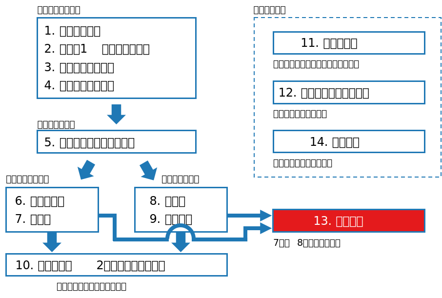
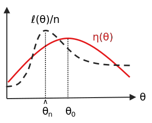

class: middle, center # 数理統計学特論II<br>第7回 漸近理論 奥 牧人 (和漢研) 2022/07/27 --- # 前回の復習 前回の目的 * ノンパラメトリック検定の基本的な用語を理解すること 前回の達成目標 * ノンパラメトリック検定の意味を説明できる。 * ウィルコクソンの符号順位検定の意味を説明できる。 * マン・ホイットニーの $U$ 検定の意味を説明できる。 * 漸近相対効率の意味を説明できる。 --- # 今回の位置付け  --- # 今回の目的と達成目標 目的 * 最尤推定と尤度比検定の漸近特性に関する証明の概要を理解すること 達成目標 * 最尤推定量の漸近有効性の証明に使う用語を複数あげられる。 * カルバック・ライブラー情報量の意味を説明できる。 * 対数尤度比が漸近的に $\chi^2$ 分布に従う理由を説明できる。 --- # 予習用キーワードの確認 * 最尤推定量 * 尤度比検定 * 大数の法則 * 中心極限定理 --- # Outline 1. 最尤推定量の漸近有効性 2. 尤度比検定の漸近分布 --- # Outline 1. **最尤推定量の漸近有効性** 2. 尤度比検定の漸近分布 --- # 記法 * これまで母集団のパラメータの真の値を $\theta$ と書いてきた。 * 今回は真の値を $\theta_0$ とし、$\theta$ は真の値とは限らない値とする。 * サイズ $n$ の標本に基づく最尤推定量を $\hat\theta_n$ と書く。 --- # 最尤推定量の復習 * 尤度関数 $L(\theta)=f(x,\theta)$ * 確率質量関数または確率密度関数 $f(x,\theta)$ をパラメータ $\theta$ の関数とみなしたもの * 対数尤度関数 $\ell(\theta)=\log L(\theta)$ * 最尤推定量 $\hat\theta_n$ <div>$$\hat\theta_n=\underset{\theta}{\arg\max}\ L(\theta)=\underset{\theta}{\arg\max}\ \ell(\theta)$$</div> * 計算方法 $$\ell'(\theta)=\frac{\partial\ell(\theta)}{\partial\theta}=0$$ --- # 漸近有効性の復習 * $n$ が大きければ最尤推定量は UMVU とほぼ同じになる * 幾つかの条件の下で、$n\to\infty$ のとき以下が成り立つ $$\begin{align}&\hat\theta_n\stackrel{p}{\to}\theta_0\\\\ &\sqrt{n}(E[\hat\theta_n]-\theta_0)\to 0\\\\ &nV[\hat\theta_n]\to\frac{1}{I_1(\theta_0)}\end{align}$$ * 1つ目の性質を一致性と呼ぶ * 2つ目は、バイアスが $1/\sqrt{n}$ よりも速く減少するという意味 * 3つ目は、クラメル・ラオの不等式の下限に相当 --- # クラメル・ラオの不等式の復習 * フィッシャー情報量 $$I_n(\theta_0)=E[\ell'(\theta_0)^2]=-E[\ell''(\theta_0)]$$ * $X_1,\ldots,X_n\stackrel{i.i.d.}\sim F$ の場合 $I_n(\theta_0)=n I_1(\theta_0)$ が成り立つ * クラメル・ラオの不等式 ($\hat\theta$ は不偏推定量) $$V[\hat\theta]\geq\frac{1}{I_n(\theta_0)}$$ ただし、$I_n(\theta_0)>0$ と、微分と積分が交換可能なこと (正則条件) を仮定 * 不変推定量で下限を達成するものは UMVU --- # 話の流れ * まず、1つ目の一致性 $\hat\theta_n\stackrel{p}{\to}\theta_0$ を示す。 * カルバック・ライブラー情報量が非負となることを使う。 * 大数の法則も使う。 * この授業では、参考書にある厳密な証明は省略する。 * 次に、2つ目と3つ目に正規分布への収束も加えた以下を示す。 $$\sqrt{n}(\hat\theta_n-\theta_0)\stackrel{d}{\to}N\left(0,\frac{1}{I_1(\theta_0)}\right)$$ * 中心極限定理と大数の法則を使う。 --- # カルバック・ライブラー情報量 * $f(x)$, $g(x)$ を確率密度関数とする。 * カルバック・ライブラー情報量 $$D(f,g)=\int_{-\infty}^\infty f(x)\log\left(\frac{f(x)}{g(x)}\right)dx$$ * $f(x)>0$ かつ $g(x)=0$ の箇所は $\infty$ とする。 * $f(x)=0$ かつ $g(x)\neq 0$ の箇所は $0\log 0=0$ とする。 * $f(x)=g(x)=0$ となる $x$ は積分範囲から除く。 * 分布間の距離のようなものを表すが、距離ではない $$D(f,g)\neq D(g,f)$$ --- # 非負性 * $y=\log x$ のグラフより $\log x\leq x-1,\ \forall x>0$ なので $$\log\left(\frac{f(x)}{g(x)}\right)=-\log\left(\frac{g(x)}{f(x)}\right)\geq 1-\frac{g(x)}{f(x)}$$ * 両辺に $f(x)$ をかけて $x$ で積分すると <div>$$\begin{align}D(f,g)&\geq \int_{x:f(x)>0}f(x)\left(1-\frac{g(x)}{f(x)}\right)dx\\&=1-\int_{x:f(x)>0}g(x)dx\geq 1-\int_{-\infty}^\infty g(x)dx=0\end{align}$$</div> * 等号成立はほとんど全ての $x$ について $f(x)=g(x)$ のとき * 「ほとんど全て」とは、測度 $0$ の集合を除くという意味 --- # エントロピー * カルバック・ライブラー情報量が非負なので以下が成り立つ <div>$$\int_{-\infty}^\infty f(x)\log f(x)dx\geq \int_{-\infty}^\infty f(x)\log g(x)dx$$</div> * エントロピー <div>$$\eta(\theta)=\int_{-\infty}^\infty f(x,\theta_0)\log f(x,\theta)dx$$</div> * 上の不等式に当てはめると $$\eta(\theta_0)\geq \eta(\theta)$$ --- # 一致性の証明 * 対数尤度の $1/n$ の (真のパラメータ $\theta_0$ のもとでの) 期待値 <div>$$\begin{align}E\left[\frac{1}{n}\ell(\theta)\right]&=E\left[\frac{1}{n}\sum_{i=1}^n\log f(X_i,\theta)\right]\\&=E[\log f(X_i,\theta)]\\&=\int_{-\infty}^\infty f(x,\theta_0)\log f(x,\theta)dx\\&=\eta(\theta)\end{align}$$</div> * 大数の法則 $\bar X\stackrel{p}{\to}\mu$ より、$Y_i=\log f(X_i,\theta)$ とおけば $$\bar Y=\frac{1}{n}\ell(\theta)\stackrel{p}{\to}\eta(\theta)\quad (n\to\infty)$$ * 左辺を最大化するのは $\hat\theta_n$ で、右辺を最大化するのは $\theta_0$ --- # 一致性の証明のイメージ * 各 $\theta$ における縦方向の収束 $\ell(\theta)/n\stackrel{p}{\to}\eta(\theta)$ を示した。 * 幾つかの条件のもとで横方向の収束 $\hat\theta_n\stackrel{p}{\to}\theta_0$ が保証される。 * この授業では厳密な証明は省略する。  --- # 漸近分布の証明 * 続いて、漸近分布に関する以下の性質を示す $$\sqrt{n}(\hat\theta_n-\theta_0)\stackrel{d}{\to}N\left(0,\frac{1}{I_1(\theta_0)}\right)$$ * 中間値の定理 (一定の条件下で $c\in(a,b)$ が存在) $$f'(c)=\frac{f(b)-f(a)}{b-a}$$ * これに $f=\ell'$ を当てはめると、 $$\ell''(\theta^*)=\frac{\ell'(\hat\theta_n)-\ell'(\theta_0)}{\hat\theta_n-\theta_0}$$ * ここで $\theta^*$ は $\hat\theta_n$ と $\theta_0$ の間の値、また、$\ell'(\hat\theta_n)=0$ も成立 --- # 漸近分布の証明、続き * 式変形 <div>$$\sqrt{n}(\hat\theta_n-\theta_0)=-\sqrt{n}\frac{\ell'(\theta_0)}{\ell''(\theta^*)}=-\frac{\sqrt{n}\frac{1}{n}\ell'(\theta_0)}{\frac{1}{n}\ell''(\theta^*)}$$</div> * 分子には中心極限定理を適用出来る <div>$$\sqrt{n}\frac{1}{n}\ell'(\theta_0)=\sqrt{n}\frac{1}{n}\sum_{i=1}^n\frac{\partial}{\partial\theta}\log f(X_i,\theta_0)$$</div> * $Y_i=\partial\log f(X_i,\theta_0)/\partial\theta$ とおけば、$E[Y_i]=0$, $V[Y_i]=I_1(\theta_0)$ より $$\sqrt{n}\bar Y=\sqrt{n}\frac{1}{n}\ell'(\theta_0)\stackrel{d}{\to}N\left(0,I_1(\theta_0)\right)$$ --- # 中心極限定理の復習 * 平たくいうと、母平均 $\mu$、母分散 $\sigma^2$ として、$n$ が十分大きいとき、標本平均が近似的に以下の正規分布に従うという定理 $$\bar X=\frac{1}{n}\sum_{i=1}^n X_i\stackrel{\cdot}{\sim}N\left(\mu,\frac{\sigma^2}{n}\right)$$ * 書き直すと $$\frac{\sqrt{n}(\bar X-\mu)}{\sigma}\stackrel{d}{\to}N(0,1)$$ または $$\sqrt{n}\bar X\stackrel{d}{\to}N(\mu,\sigma^2)$$ --- # 漸近分布の証明、続き * 分母は大数の法則が適用できる <div>$$\frac{1}{n}\ell''(\theta^*)=\frac{1}{n}\sum_{i=1}^n\frac{\partial^2}{\partial \theta^2}\log f(X_i,\theta^*)$$</div> * $\theta^*$ は $\hat\theta_n$ と $\theta_0$ の間の値だが、$\hat\theta_n\stackrel{p}{\to}\theta_0$ より、$\theta_0$ に確率収束 * $Y_i=\partial^2\log f(X_i,\theta_0)/\partial\theta^2$ とおけば、$E[Y_i]=-I_1(\theta_0)$ より $$\bar Y=\frac{1}{n}\ell''(\theta^*)\stackrel{p}{\to}-I_1(\theta_0)$$ * 分子は $N(0,I_1(\theta_0))$ に分布収束するので、分母と合わせると $$\sqrt{n}(\hat\theta_n-\theta_0)\stackrel{d}{\to}N\left(0,\frac{1}{I_1(\theta_0)}\right)$$ --- # おまけ * 証明で用いたカルバック・ライブラー情報量とフィッシャー情報量は関係がある。 * カルバック・ライブラー情報量を次のように書く $$D(f(x,\theta_0),f(x,\theta))=D(\theta_0,\theta)$$ * $\theta\approx \theta_0$ でテイラー展開すると $$D(\theta_0,\theta)\approx \frac{I_1(\theta_0)}{2}(\theta-\theta_0)^2$$ * (参考) 関数 $f(x)$ の $x=a$ まわりのテイラー展開 $$f(x)=f(a)+f'(a)(x-a)+\frac{f''(a)}{2}(x-a)^2+\cdots$$ --- # Outline 1. 最尤推定量の漸近有効性 2. **尤度比検定の漸近分布** --- # 尤度比検定の復習 * 尤度関数 <div>$$f_n(x,\theta)=\prod_{i=1}^nf(x_i,\theta)$$</div> * 帰無仮説と対立仮説それぞれの最尤推定量を $\tilde\theta_n$, $\hat\theta_n$ とおく。 * 尤度比 <div>$$L=\frac{f_n(x,\hat\theta_n)}{f_n(x,\tilde\theta_n)}$$</div> * 尤度比検定 $$L>c\quad\Rightarrow\quad\mathrm{reject}$$ --- # 漸近分布 * 帰無仮説では値が固定され、対立仮説では自由に動けるパラメータの数を $p$ とすると、帰無仮説のもとで $$2\log L\stackrel{d}{\to}\chi^2(p)$$ * 従って、$n$ が大きい場合は、$\chi^2$ 分布の上側 $\alpha$ 点を使って $$2\log L>\chi^2_\alpha(p)\quad\Rightarrow\quad\mathrm{reject}$$ とすれば、近似的に有意水準 $\alpha$ の検定となる --- # 補題 * $X=(X_1,\ldots,X_p)\sim N(0,\Sigma)$ のとき、$X^T\Sigma^{-1}X\sim\chi^2(p)$ が<br>成り立つ。 * 証明 * $\Sigma=BB^T$ を満たす $B$ を使うと、 $$B^{-1}X\sim N(0,B^{-1}\Sigma (B^{-1})^T)=N(0,I)$$ * 従って、$Y=B^{-1}X$ とおくと、 $$\begin{align}X^T\Sigma^{-1}X&=X^T(BB^T)^{-1}X\\\\&=X^T(B^T)^{-1}B^{-1}X\\\\&=Y^TY\\\\&=\sum_{i=1}^p Y_i^2\end{align}$$ --- # 証明 * この授業では局外母数が無い場合のみを扱う。そのとき、 $$2\log L=2\ell(\hat\theta_n)-2\ell(\theta_0)$$ * $\ell(\theta_0)$ を $\hat\theta_n$ のまわりで展開すると <div>$$\begin{align}\ell(\theta_0)&=\ell(\hat\theta_n)+(\theta_0-\hat\theta_n)^T\nabla\ell(\hat\theta_n)+\frac{1}{2}(\theta_0-\hat\theta_n)^TH(\theta_0-\hat\theta_n)\\H_{ij}&=\frac{\partial^2}{\partial\theta_i\partial\theta_j}\ell(\theta^*)\end{align}$$</div> * ここで $H$ はヘッセ行列で、 $\theta^*$ は $\theta_0$ と $\hat\theta_n$ を結ぶ線分上の点 * これを上式に代入すると、$\nabla\ell(\hat\theta)=0$ より、 $$2\log L=-(\theta_0-\hat\theta_n)^TH(\theta_0-\hat\theta_n)$$ --- # 証明、続き * 一方、$n=1$ のフィッシャー情報行列 $I(\theta)$ の各要素は $$I_{ij}(\theta)=E\left[\frac{\partial\}{\partial\theta_i}\ell(\theta)\frac{\partial}{\partial\theta_j}\ell(\theta)\right]=-E\left[\frac{\partial^2}{\partial\theta_i\partial\theta_j}\ell(\theta)\right]$$ * 従って、$\hat\theta_n$ の一致性の証明のときと同様に考えると <div>$$E\left[\frac{1}{n}H_{ij}\right]=E\left[\frac{1}{n}\sum_{i=1}^n\frac{\partial^2}{\partial\theta_i\partial\theta_j}\log f(X_i,\theta^*)\right]=-I_{ij}(\theta^*)$$</div> * 大数の法則より $$\frac{1}{n}H\stackrel{p}{\to}E\left[\frac{1}{n}H\right]=-I(\theta^*)$$ --- # 証明、続き * 改めて $2\log L$ を書き直すと $$\begin{align}2\log L&=-(\theta_0-\hat\theta_n)^TH(\theta_0-\hat\theta_n)\\\\&=\sqrt{n}(\hat\theta_n-\theta_0)^T\left(-\frac{1}{n}H\right)\sqrt{n}(\hat\theta_n-\theta_0)\end{align}$$ * 多次元の場合にも $\sqrt{n}(\hat\theta_n-\theta_0)\stackrel{d}{\to}N(0,I(\theta_0)^{-1})$ となる。 * $\theta^*\stackrel{p}{\to}\theta_0$ より $-H/n\stackrel{p}{\to}I(\theta_0)$ となる。 * $X=\sqrt{n}(\hat\theta_n-\theta_0)$, $\Sigma=I(\theta_0)^{-1}$ とおけば前述の補題が当てはまるので $$2\log L\stackrel{d}{\to}\chi^2(p)$$ --- # まとめ 最尤推定と尤度比検定の漸近特性に関する証明の概要を説明しました。 1. 最尤推定量の漸近有効性 <span class="times">!</span> 最尤推定量の漸近有効性の証明に使う用語を複数あげられる? <span class="times">!</span> カルバック・ライブラー情報量の意味を説明できる? 2. 尤度比検定の漸近分布 <span class="times">!</span> 対数尤度比が漸近的に $\chi^2$ 分布に従う理由を説明できる? --- # 小テスト * Moodleで小テストに回答して下さい。 * **期限は今週中** (日曜の23:59まで) とします。 * 繰り返し受験して構いません。最高得点で成績をつけます。 --- # 期末試験 * 来週は期末試験です。